SAFARI
Users
- General & History
- Varieties
- Cabbage Greens - True
- Cabbage Greens - Asian - actually Turnip Greens
- Mustard Greens & Stems
- Turnip - Asian - actually Daikon Radishes
- Turnips - Western White Turnips
- Health & Nutrition
General & History
These products are quite suitable for making in your home. but one thing to keep in mind is using natural sea salt. I emphasize "natural", because many major brands of "sea salt" are highly refined. If it doesn't seem a little moist, it's not natural. This refinement is done to make a salt usable in salt shakers, and the removed minerals are sold for industrial use.
Many pundits tell you that "salt is salt, it's nearly all sodium chloride", but some of the trace salts in sea salt can be important to proper fermentation. Koreans say only unrefined sea salt should be used for salt pickling, and there's nobody with more experience in salt pickling than the Koreans.
Refined salt also often includes flow agents which can cloud pickling liquids. Whether or not it is iodized is irrelevant. Of course you can buy sea salt from gourmet outlets for astounding prices, but the best place to buy the real thing at an acceptable price is from a Korean market. For details see our Salt page.
Cabbage Greens - True
Sauerkraut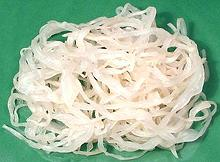 [Kapusta Kwaszona (Poland); Kvashenoyi Kapusty (Ukraine); Kvashenaya kapusta (Russia); Sauerkraut (German, English); Zuurkool (Netherlands); Chocrute (French); Liberty Cabbage (North America during World War I), Victory Cabbage (North America during World War II)] Sauerkraut is cabbage that is salted to a precise degree and allowed to ferment, pressed under its own brine, through several generations of bacteria until it reaches a desired degree of sourness from a final lactic acid fermentation. It is then refrigerated or canned to stop further fermentation. It is usually shredded before fermentation, but In some cases it is made with lengthwise wedges of cabbage rather than shredded. Sauerkraut is very important to the cuisines of Germany, Poland,
Russia, Hungary, Netherlands and parts of the Balkans. It is also
popular in parts of France and Italy that have German exposure.
Sauerkraut consumption has been declining in North America, which
is not surprisingly since it is often prepared with little care.
Details and Cooking.
|
Cabbage Greens - Asian
While they are called "Cabbages", these Asian products are all actually Turnip Greens rather than true cabbages.
Pickled Chinese Cabbage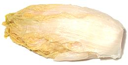 [Sour Snow Cabbage] This is simply Sauerkraut made with Napa cabbage (actually a turnip green). It is often made from whole cabbages, using a long narrow cultivar rather than the short fat ones common in our markets, but may also be made from separated leaves or even shredded leaves. Naturally, the flavor is somewhat different from that of white head cabbage sauerkraut, and is often somewhat milder. This product is usually found in vacuum packed plastic bags and should
be kept refrigerated, especially after opening the package. Typically,
Cabbage, Salt, Lactic Acid Culture, but may also include Vitamin C (to
preserve color), Potassium bisulfate (a sterilizing agent) and/or Sodium
sulphate (to preserve color).
Kimchi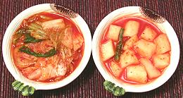 [Kimchee]
Absolutely indispensable at any Korean meal, this is a salt fermented
vegetable pickle made in Korea, Manchuria, and northern China since
ancient times. Napa cabbage (actually a turnip green) and Radish (daikon)
are most common, but there must be at least a hundred distinct recipes
that include many different vegetables. The photo shows cabbage kimchi
on the left and radish on the right. Kimchi is bright red but fairly mild
by Southern California standards - though folks from the Frozen North may
disagree.
Details and Cooking.
Tianjin Preserved Vegetable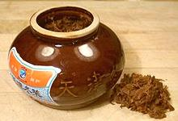 [Tianjin dongcài; (China = Tianjin winter vegetable)] Often still found in its traditional ceramic jars, this popular preserve is from Tianjin, a city state between Beijing and the Yellow Sea in northern China. I am surprised so few cookbook recipes call for it because it's ubiquitous availability in Asian markets would indicate wide use. In China it's used to flavor stir fries and stews. The flavor is fairly strong, reminiscent of fermented black beans. The main ingredient is an elongated form of Nappa Cabbage similar to
the one Koreans use to make cabbage kimchi. It's not actually a cabbage
but a turnip green. Ingred: Tianjin Cabbage, Garlic, Salt. A version
without garlic is also made for certain Buddhist sects that are
restricted to bland food, but I've not noticed it in California. This
product keeps indefinitely in a sealed container in a cool location.
Preserved Cabbage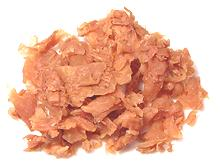 This product is from Thailand and patterned after the Tianjin Preserved Vegetable, as evidenced by it's translucent plastic jar being the exact same shape as the Tianjin ceramic jar but smaller. It is, however, much lighter in both color and flavor. Cabbage 80%, Salt 10%, Sugar 5%, Garlic 5%. This product will keep indefinitely in a sealed container in a cool location. |
Mustard Greens & Stems
While some of them appear much different from Western Mustard Greens, the Asian are of the same species.
Sour Mustard Greens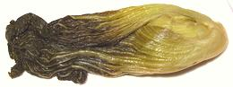 A very common ingredient in Chinese soups and stir fries, it's basically sauerkraut made with mustard greens. This is clearly not the same mustard plant that's well known to our Southern cuisine, but an Asian mustard called Gai Choy that has short, heavily ribbed leaves. While the photo shows a whole large head, Sour Mustard Greens are often made from much smaller plants, and smaller packages may contain only slices of the plant. Details and Cooking Preserved Chinese Mustard Greens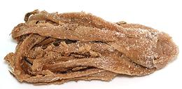 These preserved mustard greens are a bit lighter and closer to fresh
greens flavor than the Tianjin Preserved Vegetable. It is a good general
purpose preserved vegetable for stir fries and the like. Float was to
reduce salt and remove sand. . It is made from heads of Large Gai Choy.
Ingred: Chinese Mustard Greens, Salt, Sugar, Sulphur Dioxide. Store in
a sealed container in a cool location.
Details and Cooking
Szechwan Vegetable / Zha cai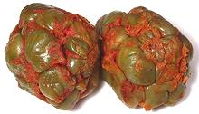 [Zhacai (Sichuan - lit. "pressed vegetable"); Cha tsai, Tsa tsai (Mandarin); Ja choi, Cha tsoi (Cantonese); Zasai (Japan); Praeserviertes Gemuese (French); Sichuan (various spellings) Vegetable; Brassica juncea subspecies tatsai]
This is a salt fermented pickled vegetable made from the lower stems of
a mutant mustard cultivar with strangely swollen stems. This variety
appeared in Sichuan provence and first became popular there, but it is
now also used in other cuisines of Southern China. It is very salty and
needs to be rinsed thoroughly before use. The photo specimens,
purchased out of a tub in a Los Angeles Asian market (Alhambra), were
about 3 inches in diameter and weighed 8-3/4 ounces each.
Details and Cooking.
Yibin Yacai / Yibin Suimi Yacai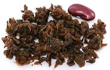 From Yibin in southern Sichuan, this is salted and fermented Mustard
Stems, but regular leaf stems, not mutant swollen stems like
Zhacai. Suimi simply means it has been
chopped small. It comes in two varieties, savory and sweet. It is the
sweet version that is most famous. and essential for Dan Dan Noodles
and other dishes. The savory is wilted, salted and fermented for 3 to 6
months. The sweet starts as the savory and is taken out of the pickle
and simmered with brown sugar for at least 8 hours, then hung up to dry
again. Following that it is packed back in the jars and fermented for
another 3 months to a year. Subst: The closest is
Tianjin Preserved Vegetable, but it is not
nearly as sweet.
Salted Mustard Stem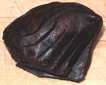 This item appears to be made made from the same swollen mustard stems Szechwan Vegetable is made from, but treated rather differently, fan sliced two ways and preserved in salt and soy sauce. This would be for the folks up north around Beijing, who appreciate chili fire even less than in Minnesota. It can be sliced up and used in stir fries. The photo specimen weighed 13-1/4 ounces - Ingredients: Mustard, Salt, Soy Sauce. |
Turnips - Asian / Radishes
Preserved Turnip / Daikon Radish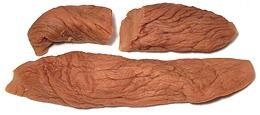 In East Asian packaging the word "Turnip" actually means "Daikon
Radish". Usually these daikons are a short stubby version rather than
the long carrot shaped Japanese style. They are salt pickled and may be
whole or more commonly are cut into strips. This product is now often
sold in vacuum bags and can be kept for months at room temperature.
Once opened they should be refrigerated in a sealed container and will
keep for many months more.
Details and Cooking.
Preserved Turnip Greens / Daikon Greens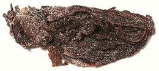 In East Asian packaging the word "Turnip" actually means "Daikon
Radish". The greens are stronger in flavor than the roots and rather than
being pickled are simply preserved in salt, lots of salt. Traditionally
they were rolled up into balls weighing 1-1/2 ounces but that form isn't
common now.
Details and Cooking.
Dried Salted Turnip / Daikon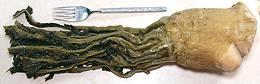 In East Asian packaging the word "Turnip" actually means "Daikon
Radish". This form has a different shape from the well known carrot
shaped Daikon, and is the whole plant with the greens topped and lesser
roots trimmed off. It's been simply preserved in salt, lots of salt,
and it needs a good soaking before use.
Details and Cooking.
Pickled Daikon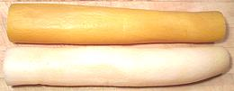 [Takuan (Japan); Danmuji (Korea)]
This product is very popular in Japan and Korea as a side dish. In
Japan and California it is also used in sushi rolls. The Japanese also
have a white daikon pickled in sake with koji culture still in it. The
photo specimens are factory made, and the yellow dyed with food coloring
- but not the hideous fluorescent yellow color many are done in.
Details and Cooking.
|
Turnips / Western White Turnip
Pickled Turnip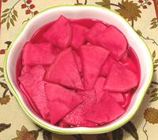 Popular in the Levant, Middle East and North Africa, these turnips are almost always pickled with a few slices of beet for color. Once again, this product is far better in flavor and nutrition naturally salt fermented, but what you can buy in stores is factory made with salt and vinegar. The photo samples were Mid East brand, presumably Southern California made and listing only Water, Turnips, Beets, Vinegar and Salt. They foamed a bit on opening so there was some natural fermentation going on. |
Health Considerations
These products preserve much of the healthy nutrients cabbage leaves and roots are famous for, but do include a lot of salt. Since they are mainly used as flavoring ingredients, often in modest quantity, they simply take the place of salt that would otherwise be added to the recipe.
Medical reports from Taiwan indicate women there have an elevated chance of colo-rectal cancer if they eat a lot of pickled vegetables. The effect on men is reported to be much less. The researchers studying this issue have found that eating peanuts a couple of times a week dramatically reduces the incidence of colo-rectal cancer, particularly in women.